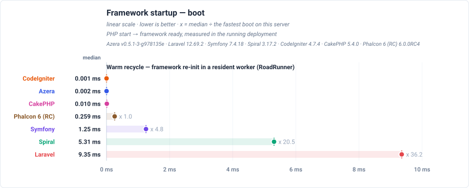

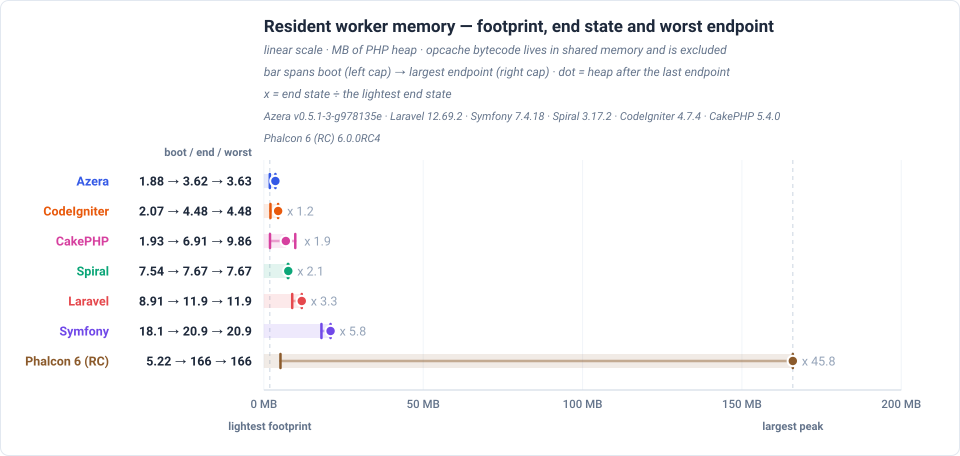
Feature benchmarks
GET /api/routing/1 — matches a typed route and dispatches it to a constant handler — no template and no database access — so the band measures route matching and dispatch and nothing else. The endpoint sits in a deep bucket of the route table, which is where a compiled index actually saves work. `/echo` is drawn beside it: the same constant handler behind a STATIC route, i.e. the floor that route matching is measured against — and, like any floor, it is mostly the SERVER rather than the framework. Measured 2026-11-24 with `temp/echo-ab.php` on the bench VM, the entire framework layer on `/echo` costs single-digit microseconds, inside rows that print two to three orders of magnitude more. A difference of a few microseconds there is below the run-to-run spread, so read `/echo` as the common floor and NOT as a comparison between entrants; the charts that separate frameworks are the ones with real work in them.

GET /items — loads one page of the 1,000 seeded rows through each framework's ORM / Active Record layer: 20 items plus a COUNT for the pagination total. The `-fast` band repeats that page with hydration switched off, so the cost of building one object per row can be read directly instead of inferred.

GET /items-qb — builds the same page of 20 items with each framework's query builder instead of its ORM, so the two data-access styles can be compared directly.
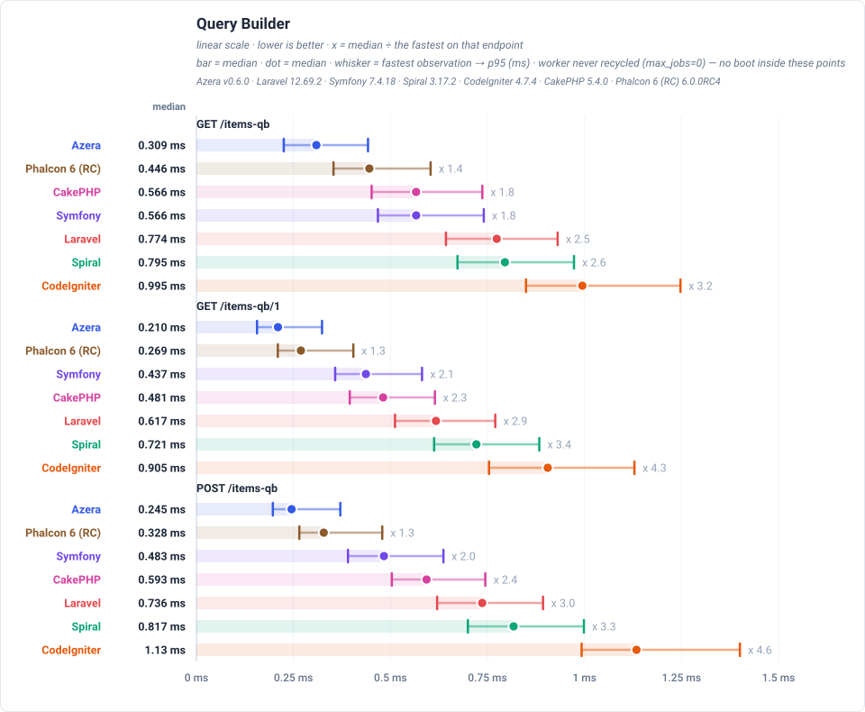
GET /api/items — serves the same page of items as a JSON response rather than HTML, which adds serialization to the ORM work. The `-fast` band repeats that response with hydration switched off, so serialization cost and hydration cost can be told apart.
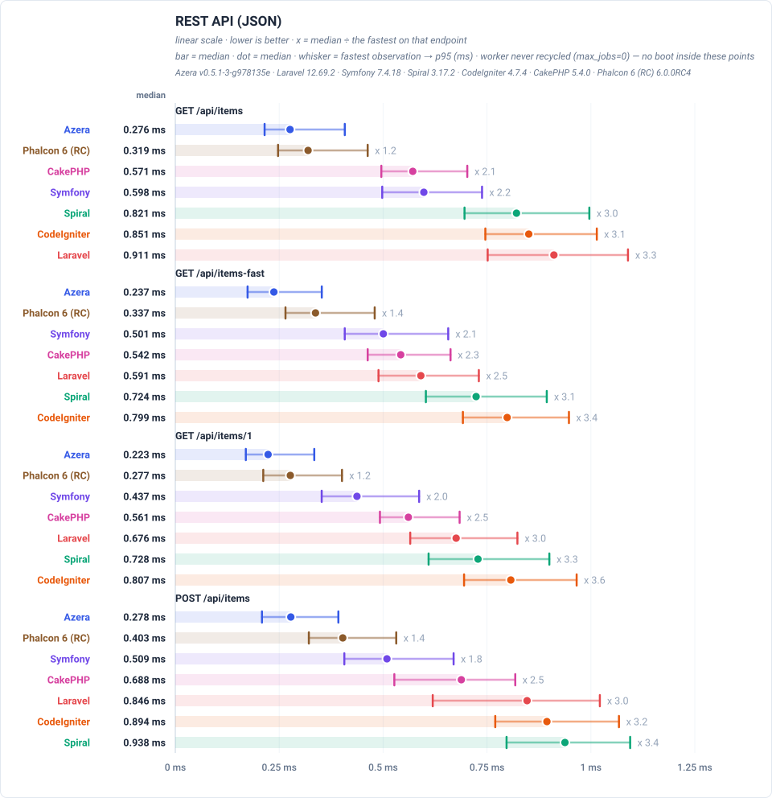
GET /features/aop — runs a request through interceptor machinery — logging, retry and transaction advice wrapped around the handler. The entrants split into two styles, and this row means different work on each side. TRANSPARENT interception — advice declared on the method and applied by generated code, handler body untouched — is what Azera does (`#[Advised]`, `#[Transactional]`, `#[Cache]`, `#[Log]`, `#[Retry]`). DIRECT interception — the pipeline written out in the code — is what everyone else does: Laravel composes an Illuminate Pipeline and Symfony chains invokable interceptor classes, both documenting that they have no proxy-based AOP; Spiral builds a `PipelineBuilder` pipeline; CodeIgniter, CakePHP and Phalcon have no interceptor layer at all and write the transactional insert by hand. Do NOT read the ranking across styles as a speed verdict: the two sides pay for different machinery, and the same caution applies to `cache`, `log` and `retry`, which on Azera also route through generated proxies while every other entrant implements them plainly. `GET /features/aop-direct` is the control: the identical insert with the transaction written by hand, served by every entrant, so the pair prices the abstraction on the same work. Phalcon sits the aop race out; it competes in logging, retry and pipeline.
Read this row in two styles — transparent: Azera; direct: Laravel, Symfony, Spiral, CodeIgniter, CakePHP. The cross-style ranking is not a speed verdict. GET /features/aop-direct is the control: the identical insert with the transaction written by hand, so the gap between that row and this one is what interception actually costs.
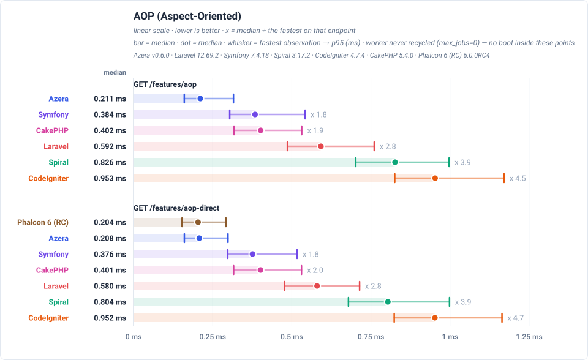
GET /features/log — logs a method entry and exit through the framework's own logger — PSR-3 everywhere. On Azera the call goes through a generated `#[Log]` proxy, so this row includes interception cost the other entrants do not pay here.
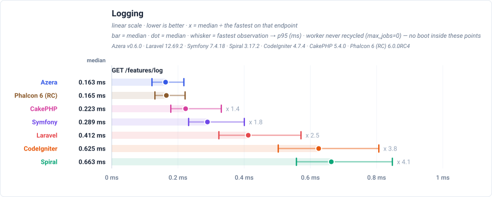
GET /features/retry — runs a deliberately flaky operation through a retry policy of up to three attempts — an explicit loop or interceptor everywhere, and on Azera a generated `#[Retry]` proxy, so this row includes interception cost the others do not pay here.
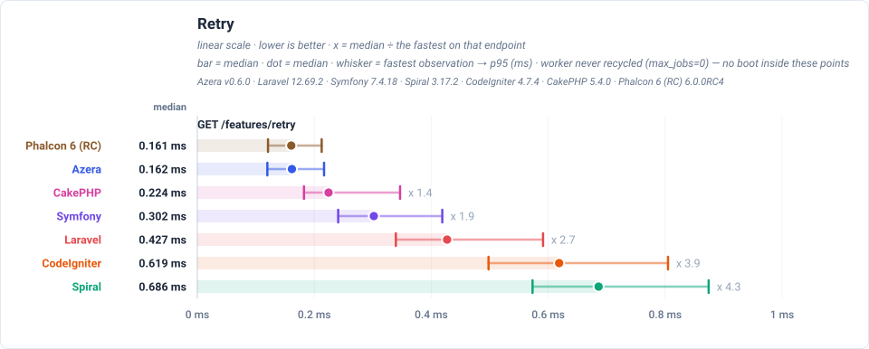
GET /features/pipeline — composes the handler with explicit interceptor steps — no proxy generation, so this row separates "the pipeline mechanism" from "the advice declaration mechanism".
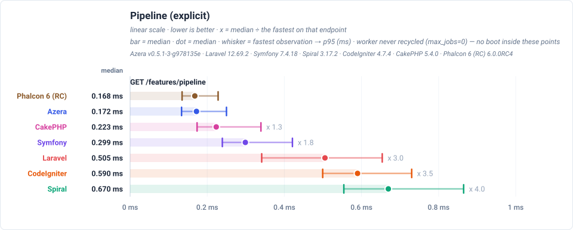
GET /features/cache — reads a COUNT(*) over the 1,000 rows through the framework's cache with a 10-second TTL, so a hit costs no database work and a miss runs the query. On Azera the read goes through a generated `#[Cache]` proxy, so this row includes interception cost the other entrants do not pay here.
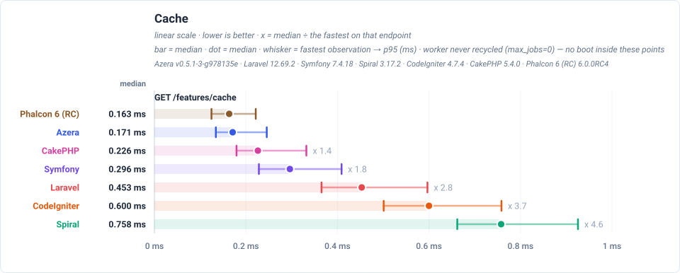
GET /features/db-events — inserts one event row per request and lets the framework's database events fire around that write. On Azera the insert goes through a generated `#[Transactional]` proxy, so this row includes interception cost the other entrants do not pay here.
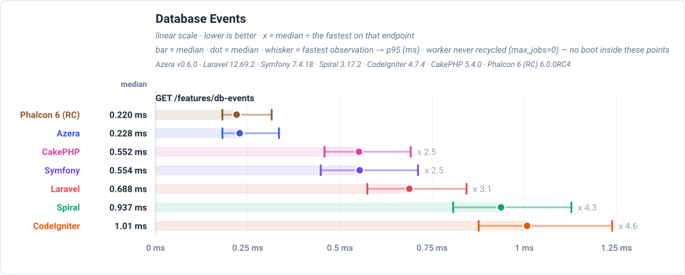
GET /features/events — dispatches an in-process event to registered listeners. On Azera the item it writes goes through a generated `#[Transactional]` proxy, so this row includes interception cost the other entrants do not pay here.
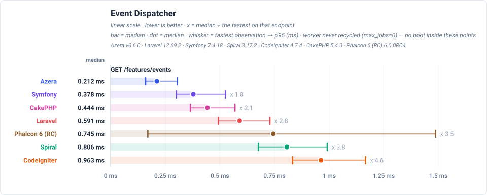
GET /features/validation — validates a payload with the framework's own validator.
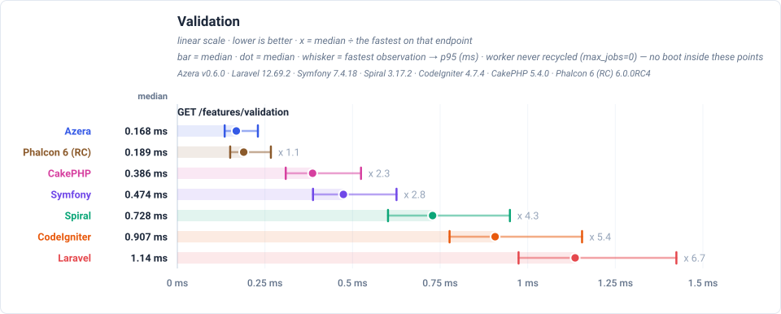
GET /features/config — resolves a value from the framework's config repository.
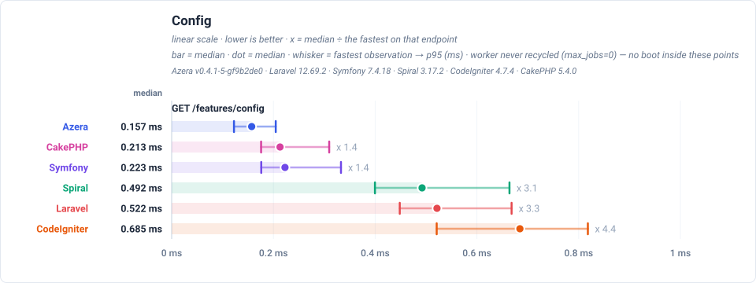
GET /features/request-scoped — resolves a service scoped to the request from the container.
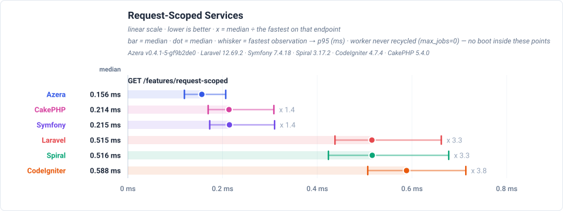
GET /features/rate-limit — checks a cache-backed rate limiter, which has long since denied the caller.
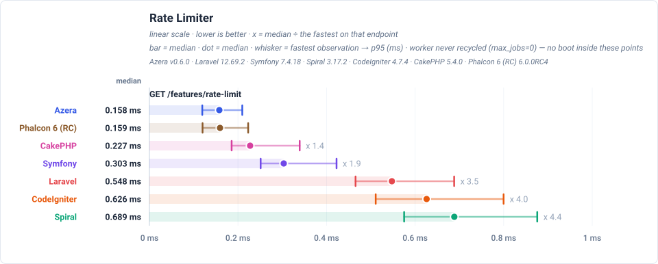
Latency by endpoint (ms, trimmed mean — lower is better) — the worker is never recycled (max_jobs=0), so each number is the measured request with no boot in it
| Request | Workload | Azera | Laravel | Symfony | Spiral | CodeIgniter | CakePHP | Phalcon 6 (RC) |
|---|---|---|---|---|---|---|---|---|
GET /api/routing/1 | no DB — typed route + constant body (routing only) | 0.175 | 0.446 | 0.325 | 0.709 | 0.586 | 0.248 | 0.165 |
GET / | no DB — routing + template only | 0.184 | 0.453 | 0.341 | 0.741 | 0.697 | 0.314 | 0.226 |
GET /echo | no DB — static route, constant body (throughput floor) | 0.164 | 0.366 | 0.287 | 0.731 | 0.575 | 0.236 | 0.162 |
GET /items | 20 of 1000 items (page 1, + COUNT) | 0.389 | 1.08 | 0.994 | 1.02 | 1.11 | 0.760 | 0.765 |
GET /items-fast | 20 of 1000 items (page 1, + COUNT), hydrated rows not built | 0.340 | 0.842 | 0.896 | 0.923 | 1.06 | 0.714 | 0.778 |
GET /items/1 | 1 item by id | 0.272 | 0.806 | 0.528 | 0.810 | 0.946 | 0.600 | 0.461 |
POST /items | 1 row upserted (sentinel #999999) | 0.405 | 0.997 | 0.606 | 1.03 | 1.11 | 0.821 | 0.593 |
GET /items-qb | 20 of 1000 items (page 1, + COUNT) | 0.324 | 0.784 | 0.586 | 0.816 | 1.02 | 0.589 | 0.461 |
GET /items-qb/1 | 1 item by id | 0.223 | 0.633 | 0.454 | 0.738 | 0.927 | 0.501 | 0.285 |
POST /items-qb | 1 row upserted (sentinel #999997) | 0.271 | 0.767 | 0.509 | 0.837 | 1.17 | 0.620 | 0.353 |
GET /api/items | 20 of 1000 items as JSON | 0.248 | 0.918 | 0.609 | 0.863 | 0.920 | 0.511 | 0.341 |
GET /api/items-fast | 20 of 1000 items as JSON, rows not hydrated | 0.218 | 0.638 | 0.515 | 0.762 | 0.879 | 0.483 | 0.365 |
GET /api/items/1 | 1 item by id as JSON | 0.199 | 0.716 | 0.460 | 0.765 | 0.846 | 0.508 | 0.304 |
POST /api/items | 1 row upserted (sentinel #999998) | 0.238 | 0.829 | 0.530 | 0.966 | 0.941 | 0.654 | 0.426 |
GET /features/aop | 1 row upserted (sentinel #888800) | 0.229 | 0.620 | 0.411 | 0.845 | 0.982 | 0.425 | — |
GET /features/aop-direct | 1 row upserted (sentinel #888800) | 0.224 | 0.597 | 0.398 | 0.823 | 0.986 | 0.429 | — |
GET /features/cache | COUNT(*) of 1000 rows, cached 10s (miss = query) | 0.169 | 0.476 | 0.304 | 0.682 | 0.638 | 0.254 | 0.170 |
GET /features/log | no DB — buffered log handlers | 0.171 | 0.429 | 0.304 | 0.683 | 0.644 | 0.242 | 0.172 |
GET /features/retry | no DB — retry policy | 0.170 | 0.442 | 0.317 | 0.708 | 0.639 | 0.247 | 0.168 |
GET /features/pipeline | no DB — middleware pipeline | 0.172 | 0.423 | 0.311 | 0.689 | 0.635 | 0.251 | 0.173 |
GET /features/db-events | 1 row upserted (sentinel #888800) + COUNT(*), events collected | 0.246 | 0.722 | 0.579 | 0.957 | 1.05 | 0.577 | 0.237 |
GET /features/events | no DB — in-process listeners | 0.229 | 0.615 | 0.400 | 0.826 | 0.990 | 0.472 | 0.864 |
GET /features/validation | no DB — validator run | 0.177 | 1.16 | 0.487 | 0.753 | 0.932 | 0.407 | 0.202 |
GET /features/config | no DB — config lookup | 0.167 | 0.529 | 0.303 | 0.688 | 0.645 | 0.244 | 0.170 |
GET /features/request-scoped | no DB — scoped service resolve | 0.162 | 0.525 | 0.301 | 0.706 | 0.636 | 0.242 | 0.164 |
GET /features/rate-limit | no DB — cache-backed limiter | 0.166 | 0.564 | 0.318 | 0.709 | 0.643 | 0.248 | 0.169 |
Server floor — real RoadRunner over loopback: a bare resident worker that renders a fixed string (floor-rr) measures the IPC + server floor every row below also pays. Only differences larger than this floor are framework differences.